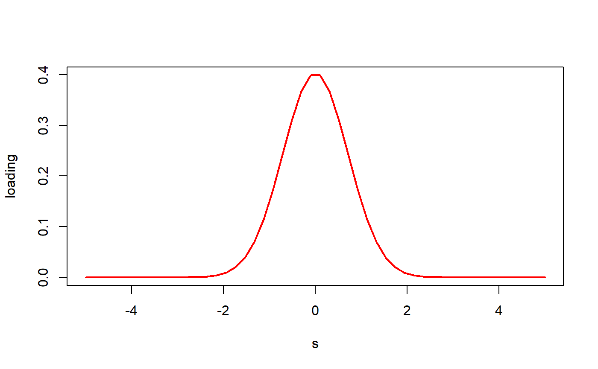
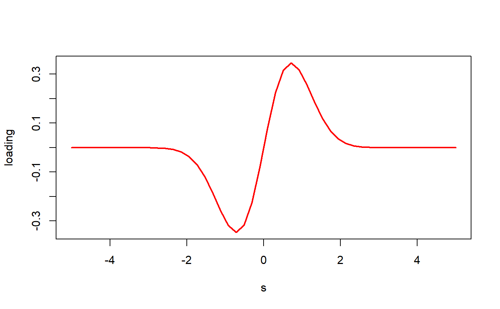
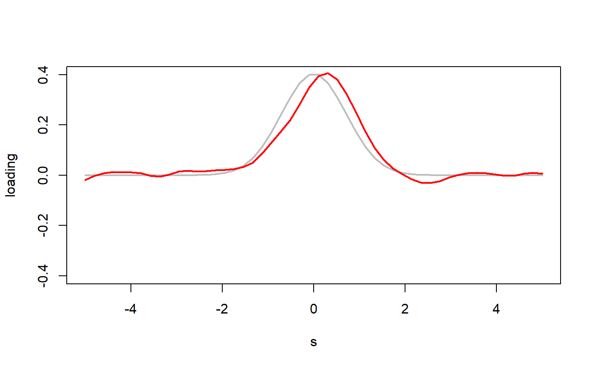
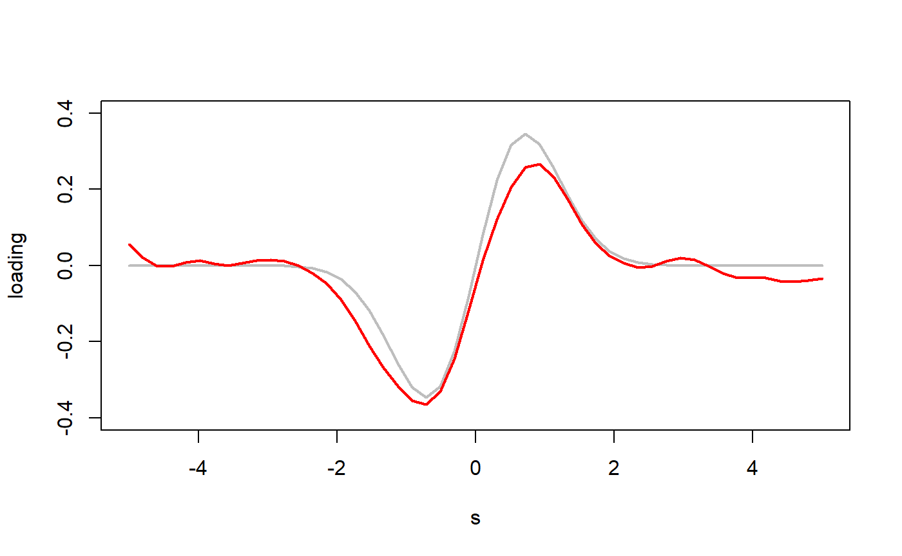
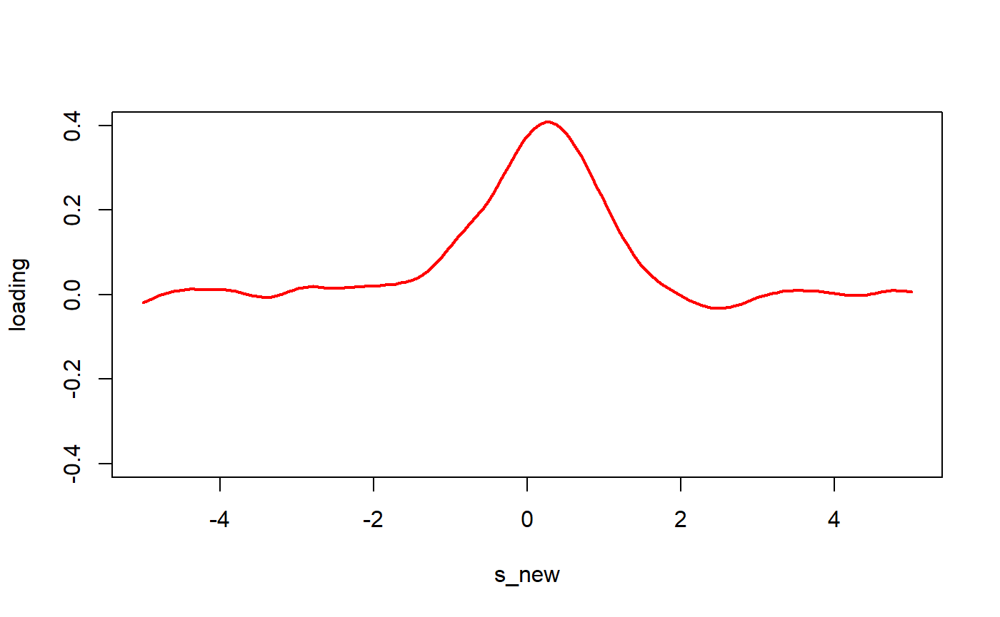
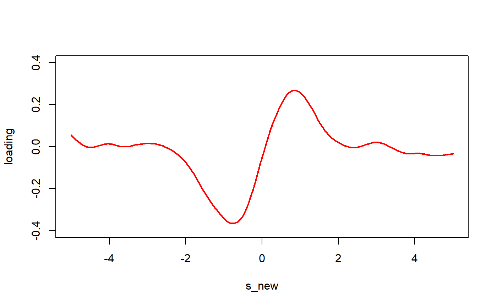
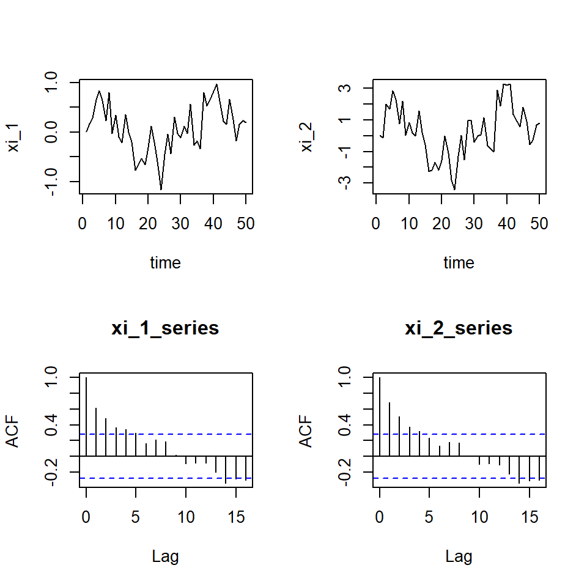
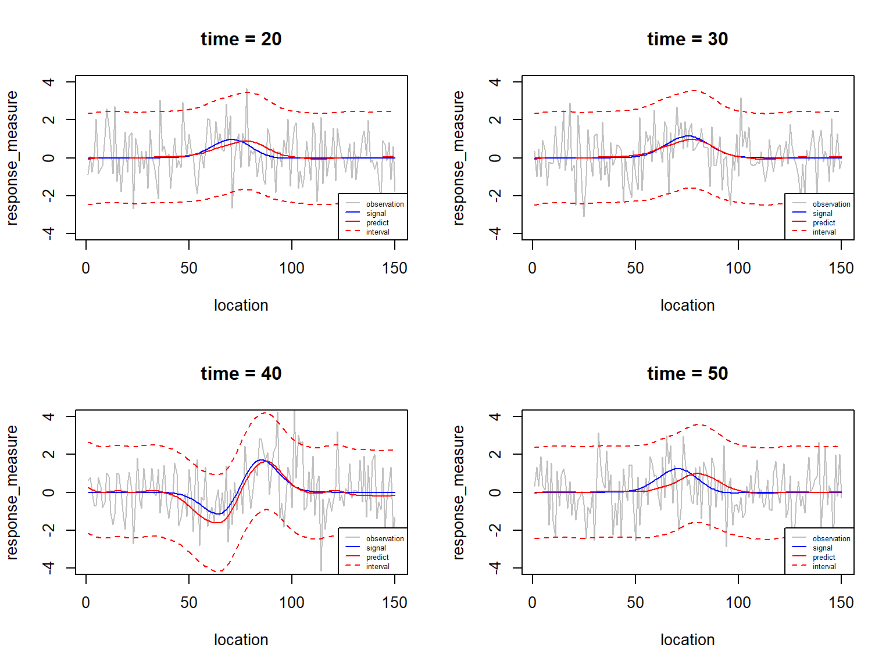
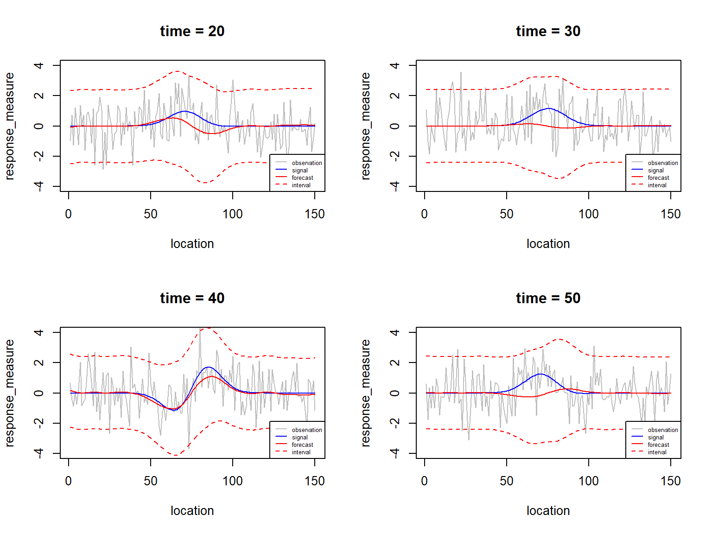

vignettes/simulation_example.Rmd
simulation_example.Rmdlibrary(temp.spat.pca3)
# time length
n_train=100
n_test=50
n=n_train+n_test
# number of location
p=50
s <- matrix(seq(-5, 5, length = p),nrow=p,ncol=1)
s_new <- matrix(seq(-5, 5, length=3*p), nrow=3*p, ncol=1)
# s = matrix(seq(-5,5,by=0.2))
# s_new = matrix(seq(-5,5,by=0.1))
# p = nrow(s)
# dim of eigen-space
k=2
# phi, A, and Lambda matrix
phi_1 <- exp(-s^2)/norm(as.matrix(exp(-s^2)),type="F")
phi_2 <- s*exp(-s^2)/norm(as.matrix(s*exp(-s^2)), "F")
phi_mat <- cbind(phi_1, phi_2)
phi_mat_new <- new_loc_phi(s_new, s, B=B_gen(s, phi_mat))
A = matrix(c(0, 0,
0, 0.8), nrow=2, byrow=T)
lambda_mat=matrix(c(9,0,
0,9),nrow=2, byrow=T)
# plot phi
for(i in 1:2){
plot(s, phi_mat[,i], type="l",
xlab="s",ylab="loading", col="red", lwd=2)
}
snr = 0.25
sigma_sq = sum(diag(lambda_mat))/(snr*p)
V = V_mat_calc(A, lambda_mat)itr = 1
set.seed(itr)
gen_result1 <- data_gen_1d_2(s_old_mat=s, s_new_mat=s_new, k=2, n=n,
lambda_mat=lambda_mat,
sigma_sq=sigma_sq,A=A, V=V)
y_mat <- gen_result1$y_mat[1:n_train,]
y_mat_new <- gen_result1$y_mat[(n_train+1):n,]
xsi_mat = gen_result1$xsi_mat[1:n_train,]
new_xsi_mat = gen_result1$xsi_mat[(n_train+1):n,]
signal_mat = xsi_mat %*% t(phi_mat)
signal_mat_new = new_xsi_mat %*% t(phi_mat_new)# parallel computing setting
library(foreach)
library(doParallel)
cl = makeCluster(6)
registerDoParallel(cl)
# tuning
cv_result_all = temp_spat_cv_final3(s=s,
y_mat=y_mat,
sigma2_eps = 1,
itermax = 30,
tol=0.001,
tau=tau_cv, k=k_select)
cv_result_all$best_list$k # = 2
cv_result_all$best_list$stau # = 8Since the tuning process is time-consuming, we load the tuning results.
#data("cv_result_all")
cv_result_all$best_list$k
#> [1] 2
cv_result_all$best_list$stau
#> [1] 8EM_result <- EM_func3(s=s, y_mat=y_mat,
y_mat_new=y_mat_new,
sigma2_eps=1,
itermax = 30,
tol = 0.001,
tau=8,
k=2)plot(s, phi_mat[,1],type="l",col="gray",lwd=2,
ylab="loading",ylim=c(-0.4,0.4))
lines(s, EM_result$Phi[,1],col="red",lwd=2)
plot(s, phi_mat[,2],type="l",col="gray",lwd=2,
ylab="loading",ylim=c(-0.4,0.4))
lines(s, EM_result$Phi[,2],col="red",lwd=2)
new_phi <- new_loc_phi(s_new=s_new,
s_old = s,
B = B_gen(s, EM_result$Phi))
pred_result = pred_func(new_phi=new_phi,
y_mat_new=y_mat_new,
EM_result=EM_result)plot(s_new, pred_result$new_phi[,1],type="l",
col="red",lwd=2,ylab="loading",ylim=c(-0.4,0.4))
plot(s_new, pred_result$new_phi[,2],type="l",col="red",
lwd=2,ylab="loading",ylim=c(-0.4,0.4))
par(mfrow=c(2,2))
plot(1:n_test,pred_result$xi_result$xi_pred[1,],type="l",
xlab="time",ylab="xi_1")
plot(1:n_test,pred_result$xi_result$xi_pred[2,],type="l",
xlab="time",ylab="xi_2")
acf(pred_result$xi_result$xi_pred[1,],main="xi_1_series")
acf(pred_result$xi_result$xi_pred[2,],main="xi_2_series")
par(mfrow=c(2,2))
for(t in c(20, 30, 40, 50)){
signal = signal_mat_new[t,]
observation = signal + rnorm(n = length(signal), sd = sqrt(sigma_sq))
pred = pred_result$y_spat[t,]
pred_up = pred_result$y_spat_up[t,]
pred_lw = pred_result$y_spat_lw[t,]
plot(observation, type="l", col="gray",
xlab="location", ylab="response_measure",
main=paste0("time = ",t),ylim=c(-4,4))
lines(signal,col="blue")
lines(pred, col="red")
lines(pred_up, col="red",lty=2)
lines(pred_lw, col="red",lty=2)
legend("bottomright",
legend = c("observation","signal","predict","interval"),
col=c("gray","blue","red","red"),
lty=c(1,1,1,2),cex=0.5)
} 
par(mfrow=c(2,2))
for(t in c(20, 30, 40, 50)){
signal = signal_mat_new[t,]
observation = signal + rnorm(n = length(signal), sd = sqrt(sigma_sq))
forecast = pred_result$y_temp[t,]
forecast_up = pred_result$y_temp_up[t,]
forecast_lw = pred_result$y_temp_lw[t,]
plot(observation, type="l", col="gray",
xlab="location", ylab="response_measure",
main=paste0("time = ",t),ylim=c(-4,4))
lines(signal,col="blue")
lines(forecast, col="red")
lines(forecast_up, col="red",lty=2)
lines(forecast_lw, col="red",lty=2)
legend("bottomright",
legend = c("observation","signal","forecast","interval"),
col=c("gray","blue","red","red"),
lty=c(1,1,1,2),cex=0.5)
} 
performance = performance_func(y_new_true = signal_mat_new,
y_spat = pred_result$y_spat,
y_temp = pred_result$y_temp,
lag0_cov_true = lag0_cov_true,
lag0_cov_est = pred_result$lag0_cov_est,
lag1_cov_true = lag1_cov_true,
lag1_cov_est = pred_result$lag1_cov_est)
performance
#> $spat_acc
#> [1] 0.05023567
#>
#> $temp_acc
#> [1] 0.2620051
#>
#> $lag0_cov_acc
#> [1] 0.004786794
#>
#> $lag1_cov_acc
#> [1] 0.003626213sim_result = temp_spat_sim_em3(s=s, y_mat=y_mat,
y_mat_new=y_mat_new,
sigma2_eps=1,
itermax = 30,
tol = 0.001,
tau=8,
k=2,
s_new = s_new,
phi_mat_new=phi_mat_new,
lambda_mat=lambda_mat,
A=A, new_xsi_mat=new_xsi_mat)results:
sim_result$performance
#> $spat_acc
#> [1] 0.05023567
#>
#> $temp_acc
#> [1] 0.2620051
#>
#> $lag0_cov_acc
#> [1] 0.004786794
#>
#> $lag1_cov_acc
#> [1] 0.003626213model1_result = model1_func(s, s_new, y_mat,y_mat_new,
xsi_mat, phi_mat,
new_xsi_mat, phi_mat_new,
lambda_mat, A)
model1_result$performance
#> $spat_acc
#> [1] 0.1616033
#>
#> $temp_acc
#> [1] 0.3292268
#>
#> $lag0_cov_acc
#> [1] 0.05215111
#>
#> $lag1_cov_acc
#> [1] 0.02083947scale_set = 1.5
kkk = 10
bas_mat = auto_gau_basis_1d(s_mat = s,
num_center = kkk,
scale = scale_set)
bas_mat_new = auto_gau_basis_1d(s_mat = s_new,
num_center = kkk,
scale = scale_set)model2_result = temp_spat_sim_em_model2(s=s, s_new=s_new,
y_mat=y_mat, y_mat_new=y_mat_new,
bas_mat=bas_mat,
bas_mat_new = bas_mat_new,
new_xsi_mat=new_xsi_mat,
phi_mat_new=phi_mat_new,
lambda_mat=lambda_mat,
A=A,
k=kkk,
sigma2_eps=1,
itermax = 30,
tol = 0.001)
model2_result$performance
#> $spat_acc
#> [1] 0.07107267
#>
#> $temp_acc
#> [1] 0.2777181
#>
#> $lag0_cov_acc
#> [1] 0.0075821
#>
#> $lag1_cov_acc
#> [1] 0.004174113